Способы удаления страницы в Инстаграме: навсегда и временно

- Удалить профиль через официальный сайт навсегда
- Как удалить с мобильной версии без восстановления
- Временная деактивация страницы без потери аккаунта
- Альтернатива - сделать свой профиль недоступным для других
- Скрыть страницу от определенных людей
- Настройки конфиденциальности в Инстаграме*
- Удаление лишних аккаунтов: как не удалить основной
Удалить страницу в Инстаграме* пользователь может навсегда, скрыть её или же сделать недоступной временно. У каждого из способов есть ограниченное время действия: период, в течение которого можно вернуть учетную запись.
Удалить профиль через официальный сайт навсегда
Несмотря на все нововведения, удалить профиль в Инстаграме* все еще остается доступным через старую версию сайта. В официальном клиенте на компьютере и смартфоне отсутствует функция: «Деактивировать страницу». Поэтому, проще убрать с компьютера, где можно посмотреть все причины и даже вписать свою. Как удалить профиль в Инстаграме* навсегда:
- Перейти по ссылке: Деактивировать профиль.
- Выбрать в выпадающем списке причину для удаления – подтвердить.
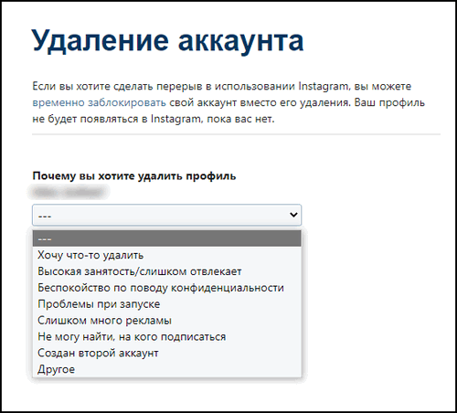
- Появится страница с датой, когда будет окончательно удален профиль.
В социальной сети появилось одно изменение: учетная запись не будет удалена сразу, а спустя 30 дней. В течение этого срока можно вернуть страницу, получить данные и даже скачать снимки.
Как удалить с мобильной версии без восстановления
Удалить Инстаграм* аккаунт на телефоне возможно по той же ссылке или же, воспользоваться разделом «Помощь». В официальной справке на мобильной версии есть текстовые подсказки, которые перенаправляют пользователя на другие страницы. Они выделены жирным шрифтом и синим цветом. Деактивировать профиль в Инстаграме*:
- Зайти в приложение – Настройки - Справка.
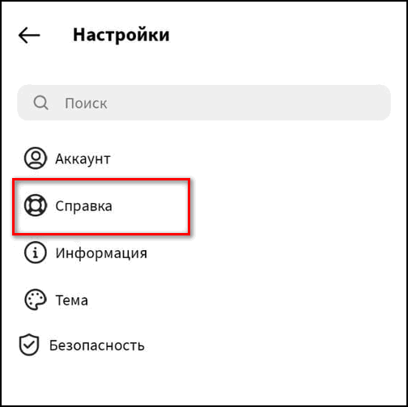
- Справочный центр.
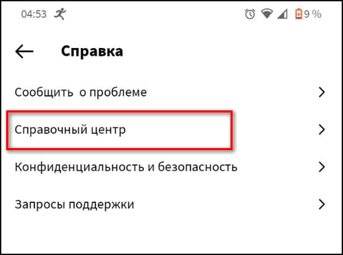
- Ввести название проблемы: «Удалить аккаунт».
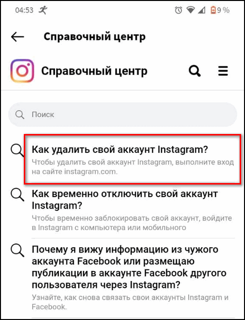
- Перейти к первой статье – выбрать ссылку на «Деактивировать».
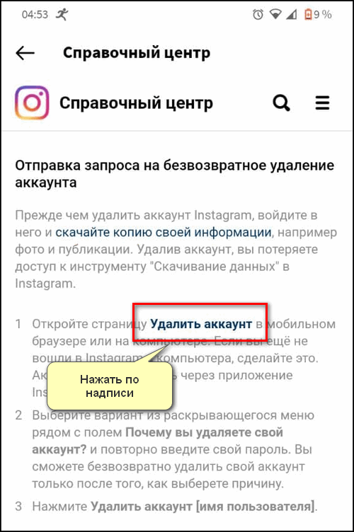
- Указать причину удаления и подтвердить.
Страница будет обновлена, а пользователь окажется на главной, где нужно ввести логин и пароль, чтобы войти. Но в этом случае, если владелец страницы повторно введет свои учетные данные, Инстаграм* восстановит только что удаленный аккаунт.
Получить архив с данными в Инстаграме*
Чтобы не потерять важной информации о своей странице, пользователь может получить архив. Но в него не входят опубликованные Сторис или публикации. Он предназначен для текстовой информации, как биография, отправленные комментарии и названия страницы. Как получить архив:
- Перед деактивацией зайти в профиль – нажать по аватарке.
- Настройки – Конфиденциальность и безопасность.
- Скачать данные – указать адрес электронной почты на которую зарегистрирована страница.
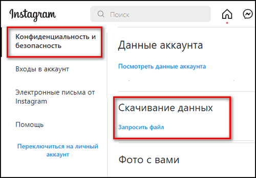
- Подождать, пока на email поступит письмо с архивом.
Далее, пользователь переходит по ссылке, которая находилась в письме. Получив архив, его нужно распаковать, воспользовавшись WinRaR или 7Zip. В основной папке находятся подпапки, где рассортирована информация.
Время сбора данных зависит от давности создания учетной записи, количества взаимодействий. К примеру, если владелец профиля часто менял описания, то это может повлиять на время формирования архива.
Временная деактивация страницы без потери аккаунта
Временно удалить Инстаграм* без потери аккаунта возможно только с компьютерной версии. Социальная сеть ограничивает действия со страницей, убирает её из поиска, а любой посетитель увидит сообщение: «Страница временно недоступна». У владельца есть 30 дней, чтобы восстановить в социальной сети и продолжить общаться с подписчиками, друзьями.
Временно убрать аккаунт:
- Зайти в Instagram* с компьютерной версии – нажать по кнопке: «Редактировать профиль»,
- В конце списка: «Временно отключить мой аккаунт» - указать причину.
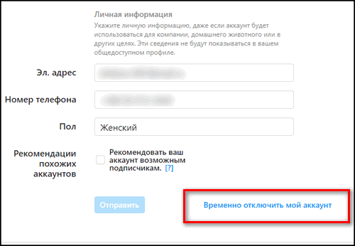
- Подтвердить временное отключение.
Чтобы восстановить такой профиль, нужно повторно ввести данные для входа. То есть, никаких дополнительных действий, чтобы вернуться страницу не нужно.
Альтернатива - сделать свой профиль недоступным для других
Один из способов, как не деактивировать страницу, но сделать её неактивной – воспользоваться функцией «Закрытый профиль». Как скрыть учетную запись:
- Зайти в приложение – Настройки.
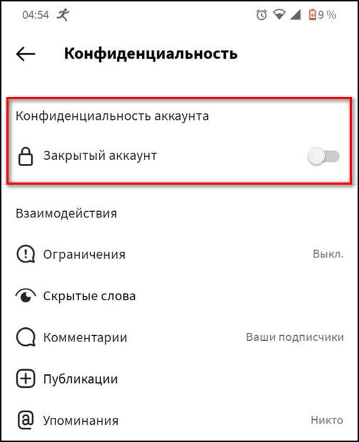
- Конфиденциальность – Закрытый профиль.
Но такой статус не подходит, если владелец планирует создать бизнес-профиль или аккаунт автора. Если устанавливать скрытый тип, то исчезнет раздел «Статистика», «Промоакции», которые предназначены для продвижения бизнеса. В закрытом профиле публикации и Истории видят только пользователи, которые ранее были подписаны на учетную запись. Новым фанатам придется подать заявку, чтобы подписаться. В этом случае, владелец профиля вправе отказать или вовсе не реагировать.
Скрыть страницу от определенных людей
Чтобы в Инстаграме* сделать свою страницу недоступной для определенных пользователей, можно воспользоваться двумя функциями:
- скрыть. Функция «Скрыть профиль» работает в том случае, если владелец аккаунта не хочет, чтобы посетитель видел его Сторис;
- заблокировать. Полностью добавить в «черный список».
Как скрыть Истории в Инстаграме*:
- Зайти в профиль к выбранному пользователю.
- Нажать сверху три точки: «Скрыть мою Историю».
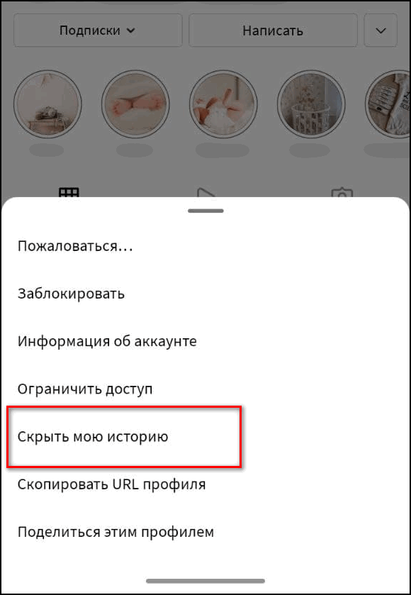
Теперь указанный посетитель страницы не сможет просматривать Сторис, отправлять реакции. Второй вариант – заблокировать. Добавить человека в черный список:- Перейти на страницу к выбранному пользователю.
- Три точки сверху – Заблокировать.
- Подтвердить действие.
Посетитель не сможет зайти на страницу, чтобы посмотреть опубликованный контент или просмотреть Истории.
Настройки конфиденциальности в Инстаграме*
Кроме «Закрытый аккаунт», можно установить параметры конфиденциальности для просмотра Историй. То есть, они будут видны только определенному кругу пользователей, которые ранее добавлены в список «Близких друзей». Как создать перечень из доверенных подписчиков:
- Зайти в Инстаграм* – нажать сверху три полоски.
- Выбрать раздел: «Близкие друзья» - добавить в перечень новых пользователей.
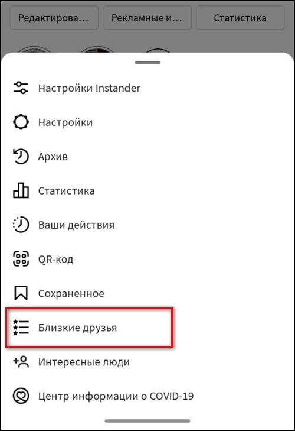
В этой категории появятся все подписчики, которые уже есть в профиле, а также из синхронизированного аккаунта Facebook*. В основном, добавляют тех, с кем оформлена взаимная подписка.Максимальное количество пользователей, которых можно внести в перечень – 5000. Инстаграм* попросту не позволит добавлять больше друзей.
Чтобы разместить Историю только для друзей:
- Нажать по значку: «Добавить публикацию» - История.
- Далее – Опубликовать.
- Список близких друзей – подтвердить размещение.
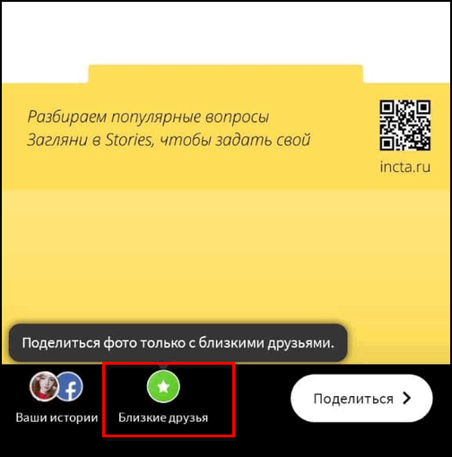
В отличие от стандартной публикации, в этом случае появится зеленый значок в виде рамки для аватарки. Увидеть этот пост смогут только те, кто оказался в списке «Близкие друзья».
Удаление лишних аккаунтов: как не удалить основной
Удалить профессиональный аккаунт в Инстаграме* или личный возможно только с официальной версии. Но при деактивации появится окно, где будет указано: «Вы действительно хотите удалить этот профиль». Чтобы не удалить основную учетную запись, нужно помнить:
- при деактивации с мобильной версии, нужно переключиться между аккаунтами, выбрав предназначенный для удаления;
- с компьютерной нужно убедиться, что вписанный никнейм верный.
Если пользователь на этапе: «Выбрать причину деактивации» заметил, что неверно указан аккаунт – достаточно закрыть вкладку и перейти в сам Инстаграм*. Там, нужно выйти из текущей учетной записи и открыть нужную.